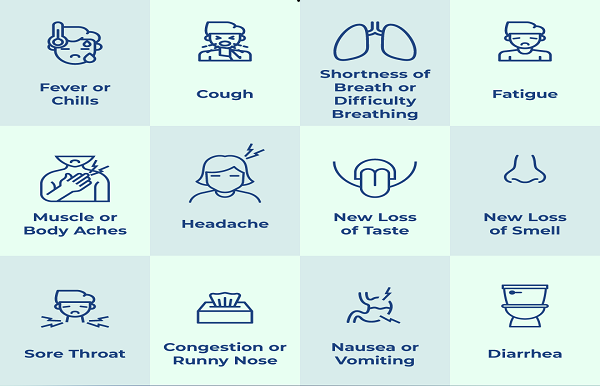
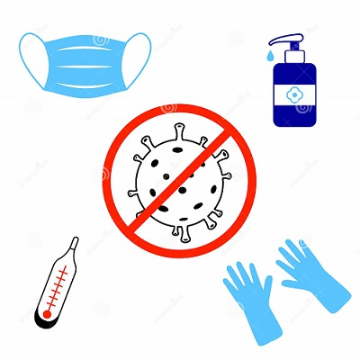

People with COVID-19 have had a wide range of symptoms reported – ranging from mild symptoms to severe illness. Symptoms may appear 2-14 days after exposure to the virus. Anyone can have mild to severe symptoms. People with these symptoms may have COVID-19:
* Fever or chills
* Cough
* Shortness of breath or difficulty breathing
* Fatigue
* Muscle or body aches
* Headache
* New loss of taste or smell
* Sore throat
* Congestion or runny nose
* Nausea or vomiting
* Diarrhea
* Clean your hands often. Use soap and water, or an alcohol-based hand rub.
* Maintain a safe distance from anyone who is coughing or sneezing.
* Wear a mask when physical distancing is not possible.
* Don’t touch your eyes, nose or mouth.
* Cover your nose and mouth with your bent elbow or a tissue when you cough or sneeze.
* Stay home if you feel unwell.
* If you have a fever, cough and difficulty breathing, seek medical attention.